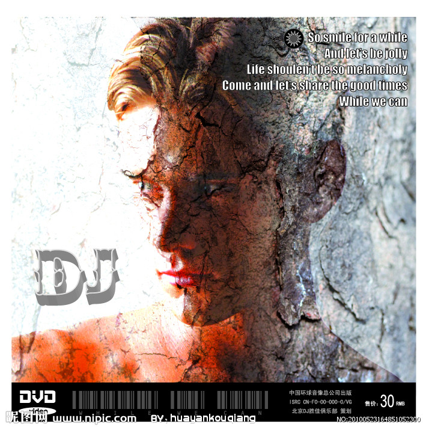
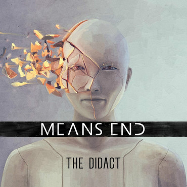
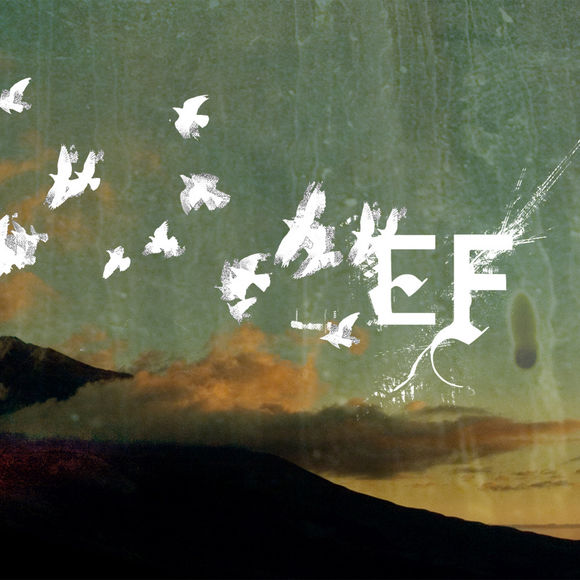
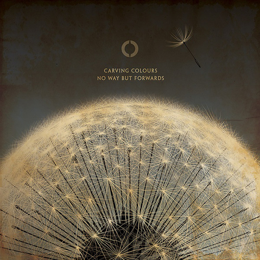
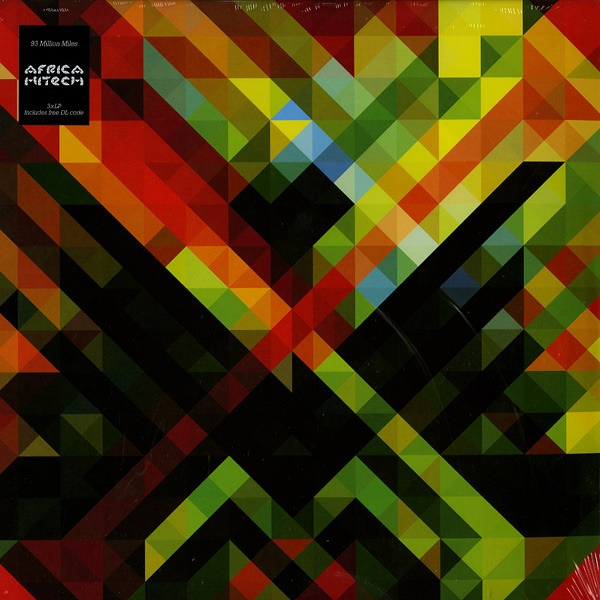
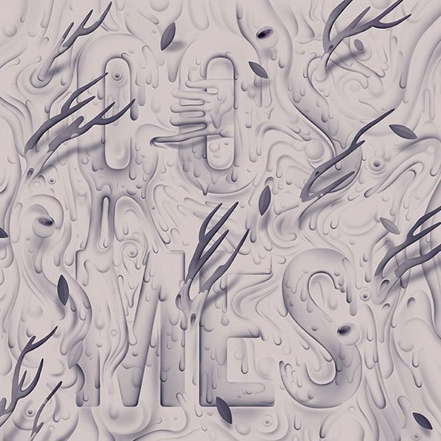
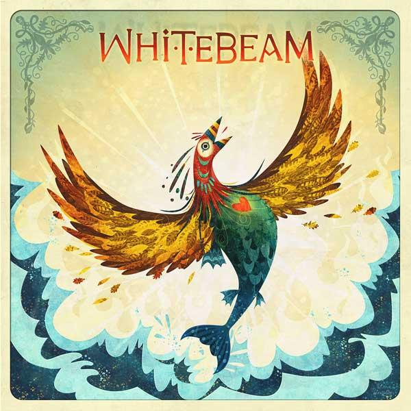
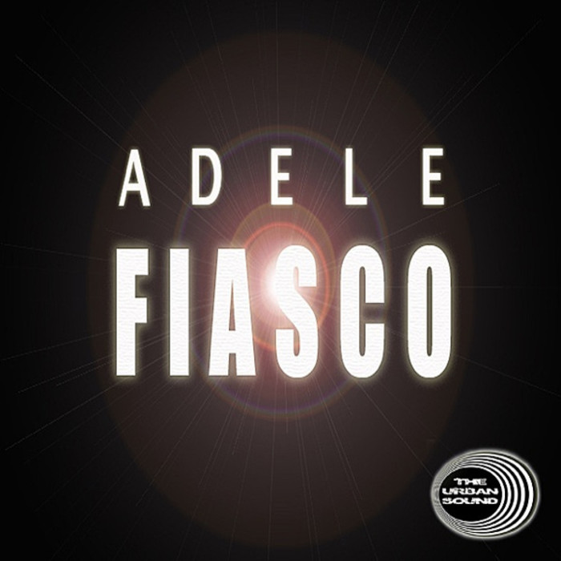
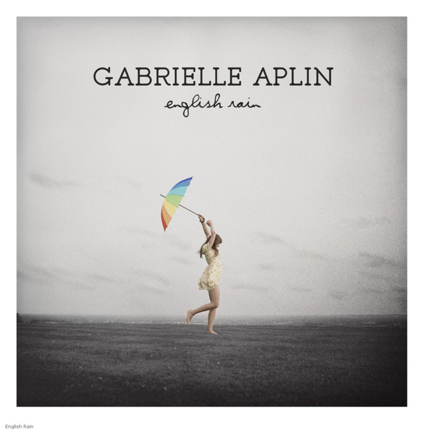
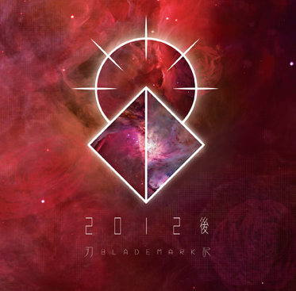

0:00
/
left
right
GALA - 追梦赤子心
知天使介绍：杨璇璇生于 1990-04-12 武汉 星座 白羊座
收听 »

蔡健雅 - 红色高跟鞋
知天使介绍：吴悠生于 1985-08-26 北京 星座 处女座
收听 »
汪峰 - 无处安放
知天使介绍：高齐生于 1979-11-22 北京 星座 天蝎座
收听 »
许巍-生活不止眼前的苟且
记者以居民身份联系多家单位，截至发稿，无一单位承诺负责此事。
收听 »
赵雷-赵小雷
遗憾的至今未能有任何一家厂商的一款智能手表在市场中获得成功，几乎均是腰斩。
收听 »

李宇春-再不疯狂我们就老了
知天使介绍：晏天际生于 1988-06-22 天津 星座 巨蟹座
收听 »
李宇春-蜀绣
知天使介绍： 吴鑫桐生于 1989-03-27 沈阳 星座 白羊座
收听 »
赵照-你就是我最想要的丫头
太厉害，英国面包师捏出来的艺术品
收听 »
赵雷-吉姆餐厅
复古风格的流行这几年越来越热，复古装已经不是淑女的专利，OL装，非主流复古装扮中都少不了复古装的元素，你的衣橱里还没有复古装？那就快跟小编来吧！
收听 »
赵雷-赵小雷
沃兹拍性感内衣广告 横卧躺椅极致诱惑
收听 »
赵雷-赵小雷-不开的唇
《特效化妆师大对决第四季》讲述了Syfy真人秀节目《Face off》
收听 »

朴树-送别
知天使介绍：潘霜生于 1987-04-03 杭州 星座 白羊座
收听 »
许巍-灿烂
知天使介绍：陈思阳生于 2008-12-18 星座 射手座
许巍-生活不止眼前的苟且
原料：鱼头1（约2斤） 香葱4根 葱3片 姜3片
收听 »

周杰伦-七里香
知天使介绍：付琦生于 1986-05-30 北京 星座 双子座
收听 »
赵大格 - 我在人民广场吃炸鸡
继宝马2系敞篷版车型的谍照曝光之后（点击查看收听），日前，我们又在网络上发现了一张宝马2系Gran Coupe车型的宣传图。据最新消息，该车有望于2014年正式发布。
收听 »
张杰-突然想爱你
知天使介绍：王白石生于 1985-12-20 吉林 星座 射手座
收听 »

许巍-家
这个秋末冬初的季节正是室内私房人像的升温季节。还在担心女友的姿势呆板吗？四大经典私房照摆姿，绝对给你一个不一样的女朋友。今天给大家介绍一下室内私房照美资要领！
收听 »

王菲-流年
知天使介绍：潘霜霜生于 1987-04-03 杭州 星座 白羊座
收听 »
王菲-匆匆那年
知天使介绍：王婧生于 1985-06-05 北京 星座 双子座
收听 »
王菲-传奇
知天使介绍：杨璇璇生于 1990-04-12 武汉 星座 白羊座
收听 »

逃跑计划-世界-夜空中最亮的星
知天使介绍：王伟宁生于 1989-01-17 北京 星座 摩羯座
收听 »

卢巧音-好心分手
有的时候，你必须知道自己是普通的沙粒，而不是价值连城的珍珠。
收听 »

林忆莲-为你我受冷风吹
知天使介绍：陈晓晨生于 1986-09-07 北京 星座 处女座
收听 »
华晨宇-烟火里的尘埃
TA是众人口中的龙少，TA是你费劲心思也不得而知的一个谜，TA是不畏众人不惑的恶魔之女，龙思雨
收听 »

古巨基-情歌王
知天使介绍：郭勇生于1977-07-08 青岛 星座：巨蟹座
收听 »
黄雨勋-听见下雨的声音
年3月27日讯，伦敦，当地时间3月26日，著名英超宝贝乔丹（Katie Price poses ）为个人时装品牌KP Equestrian五周年庆祝，扮粉红妖冶神兽搔首弄姿。
收听 »
left
right
×